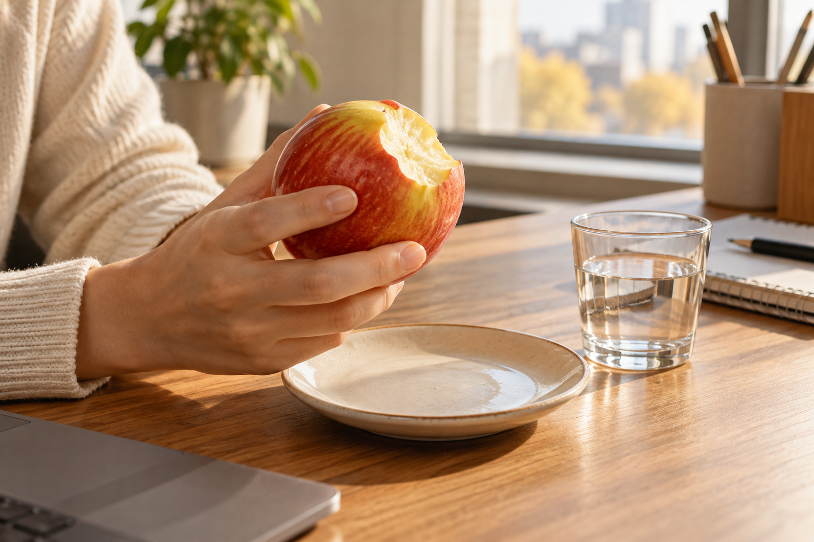

TSTC LAB · 2026.10.13
사과를 한 입 베어 문 뒤,
물을 찾는 이유
사과를 한 입 먹고 물컵 쪽으로 손이 가는 짧은 순간. 그 움직임에는 단맛만으로는 다 말할 수 없는 맛과 향, 식감의 기억이 남아 있습니다.

오후 일을 잠깐 멈추고 사과를 한 입 베어 물었습니다. 처음에는 아삭한 소리가 먼저 나고, 이어서 단맛이 퍼집니다. 그런데 곧 물을 한 모금 마시고 싶어질 때가 있습니다. 입안이 텁텁해서일 수도 있고, 향을 한 번 정리하고 다음 조각을 먹고 싶어서일 수도 있습니다. 사과를 좋아하는지 아닌지는 이 짧은 행동 하나만으로 정해지지 않습니다.
누군가는 씹을수록 산뜻한 사과를 반기고, 누군가는 단맛이 오래 남으면 물을 찾습니다. 껍질이 단단하게 느껴지는 날도 있고, 같은 사과라도 차갑게 꺼내 먹었을 때는 향보다 시원한 느낌이 먼저 남습니다. 입에 들어온 과일은 맛 하나로만 기억되지 않습니다. 소리, 향, 단단함, 먹고 난 뒤의 기분이 차례로 겹칩니다.
TSTC LAB에서는 이런 작은 멈춤을 놓치지 않습니다. “달았어요?”라는 대답 뒤에 “다음 한 입도 바로 먹고 싶었어요, 아니면 물이 먼저 생각났어요?”라고 물어볼 수 있습니다. 정답을 가르는 질문이 아닙니다. 그 사람이 과일에서 무엇을 편하게 느끼는지, 어느 감각에서 잠깐 멈추는지를 알아보는 질문입니다.
한 입 뒤에 물을 찾는 마음도
과일을 고르는 감각의 한 부분입니다.
과일가게에서 다음 사과를 고를 때도 이 기억은 쓸모가 있습니다. 씹는 느낌이 가벼운 쪽을 원했는지, 향이 선명한 쪽이 좋았는지, 차갑게 먹었을 때 더 좋았는지를 떠올리면 됩니다. 품종 이름을 다 외우지 않아도 괜찮습니다. 내 입안에 남았던 장면을 말하면, 그다음 추천은 조금 더 구체적이 됩니다.
감각을 살피는 일은 어렵게 맛을 분석하는 일이 아닙니다. 물컵을 집는 손처럼 자연스러운 반응을 한 번 더 알아차리는 일에 가깝습니다. 오늘 먹은 사과 한 입이 내일 고를 과일을 바꾸는 순간, TSTC는 생활 안에서 가장 쉽게 시작됩니다.
KFA Editorial · 생활 속 장면을 구성한 에세이입니다. 특정 인물의 취재 기록이 아닙니다.